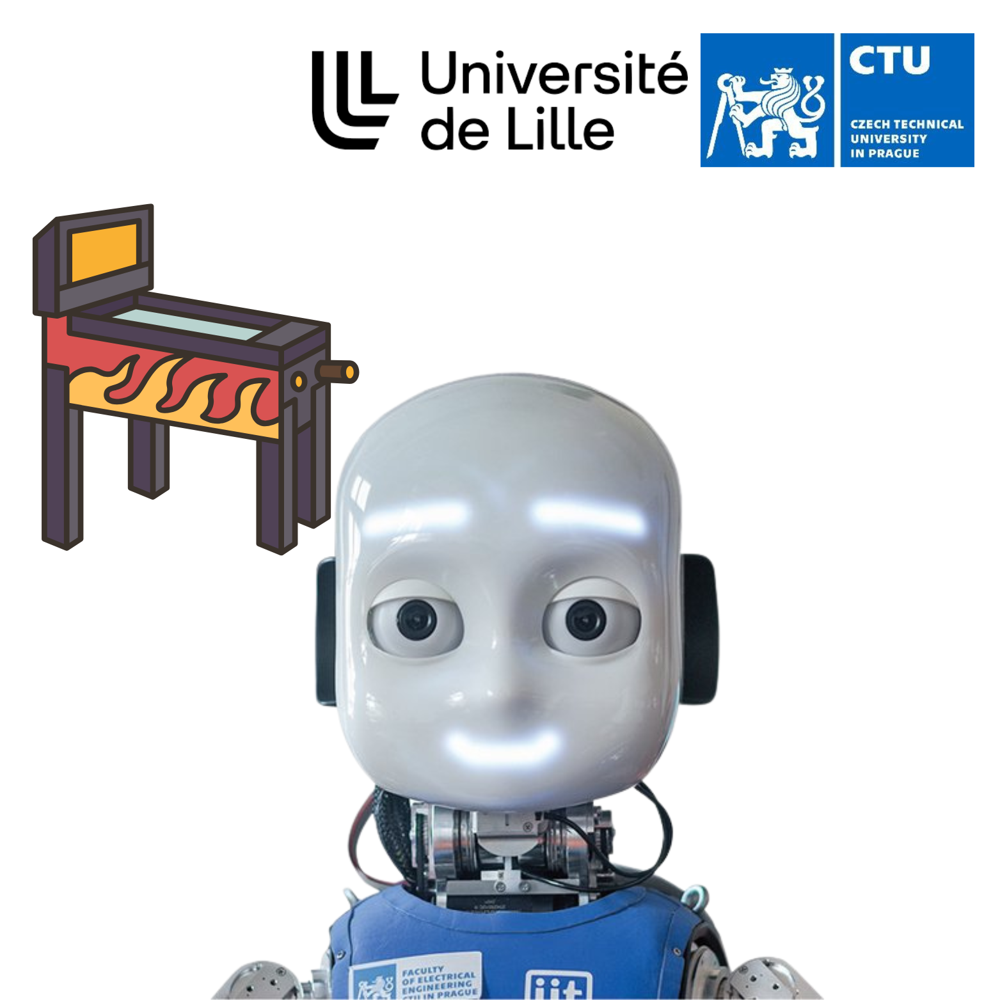
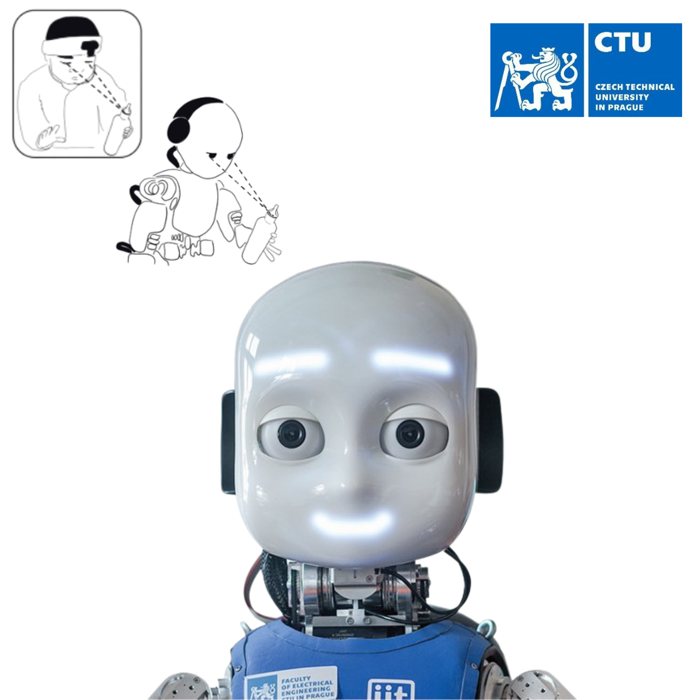
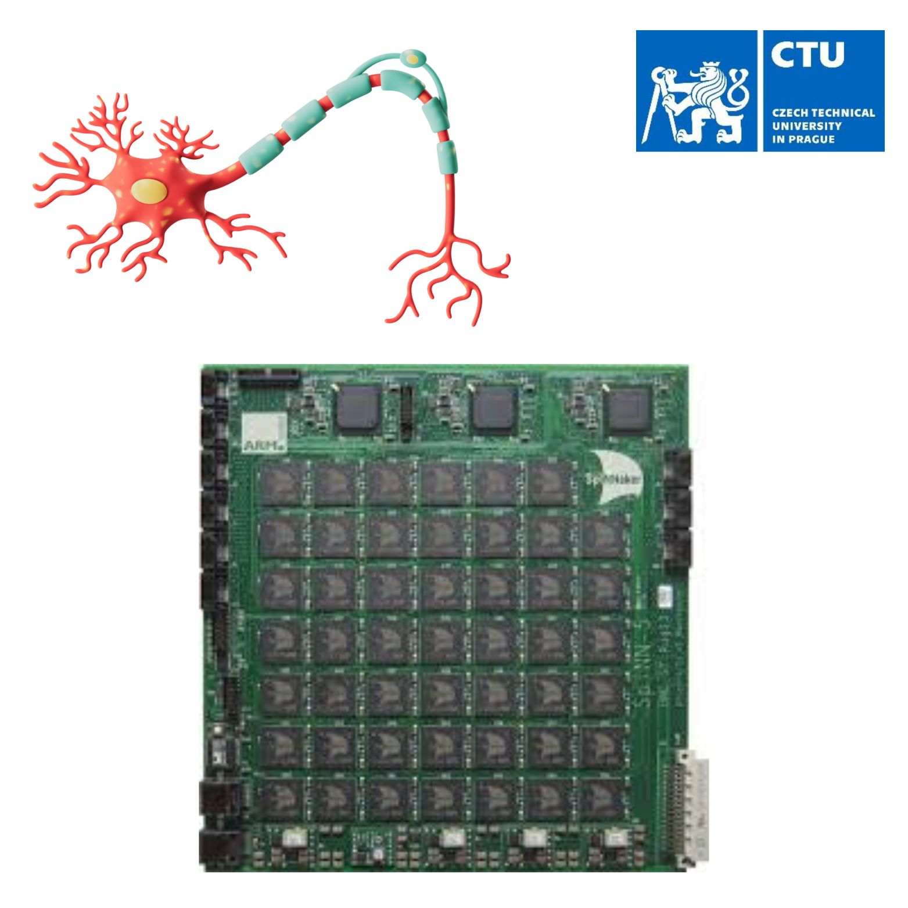
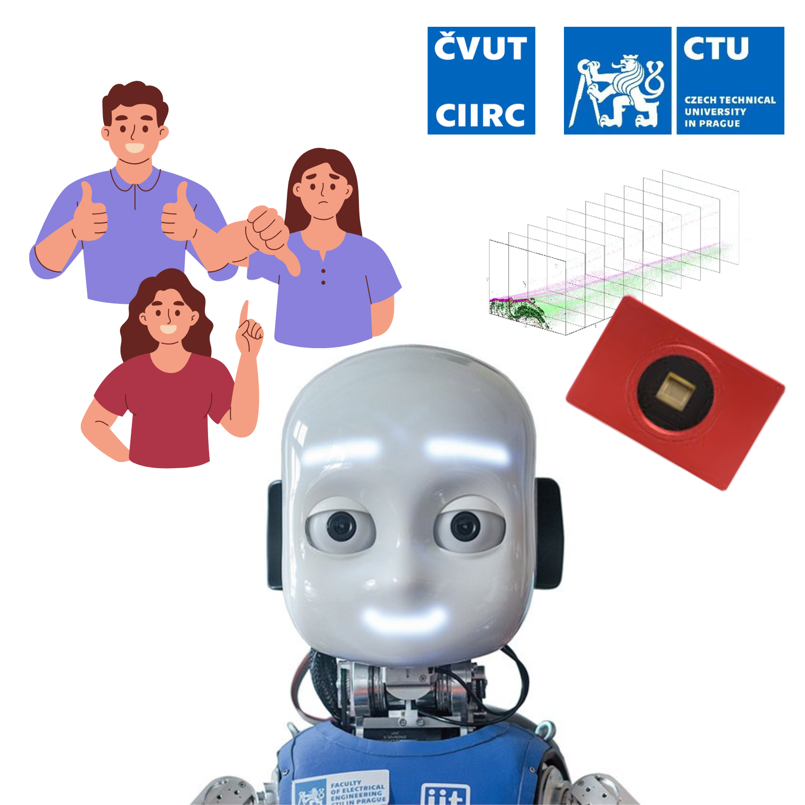
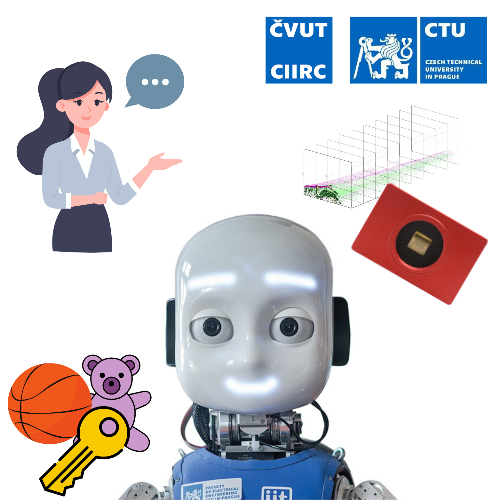
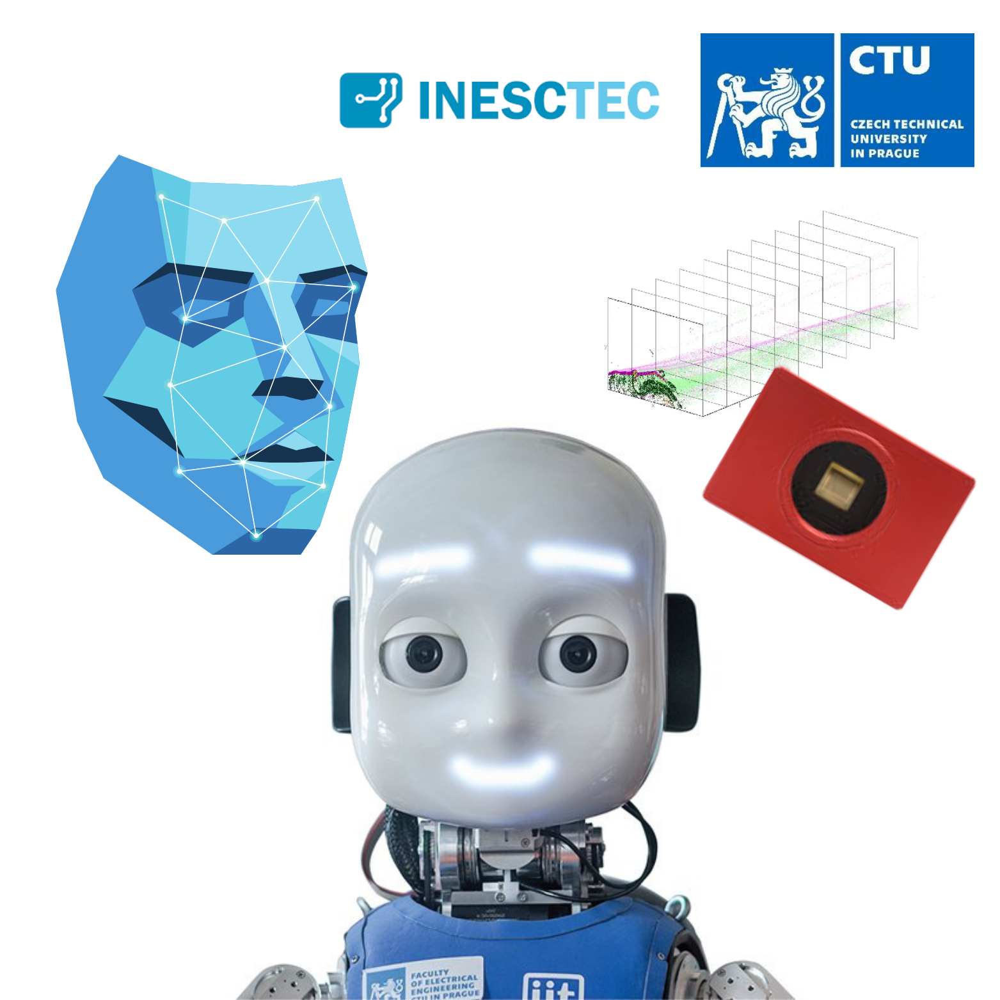
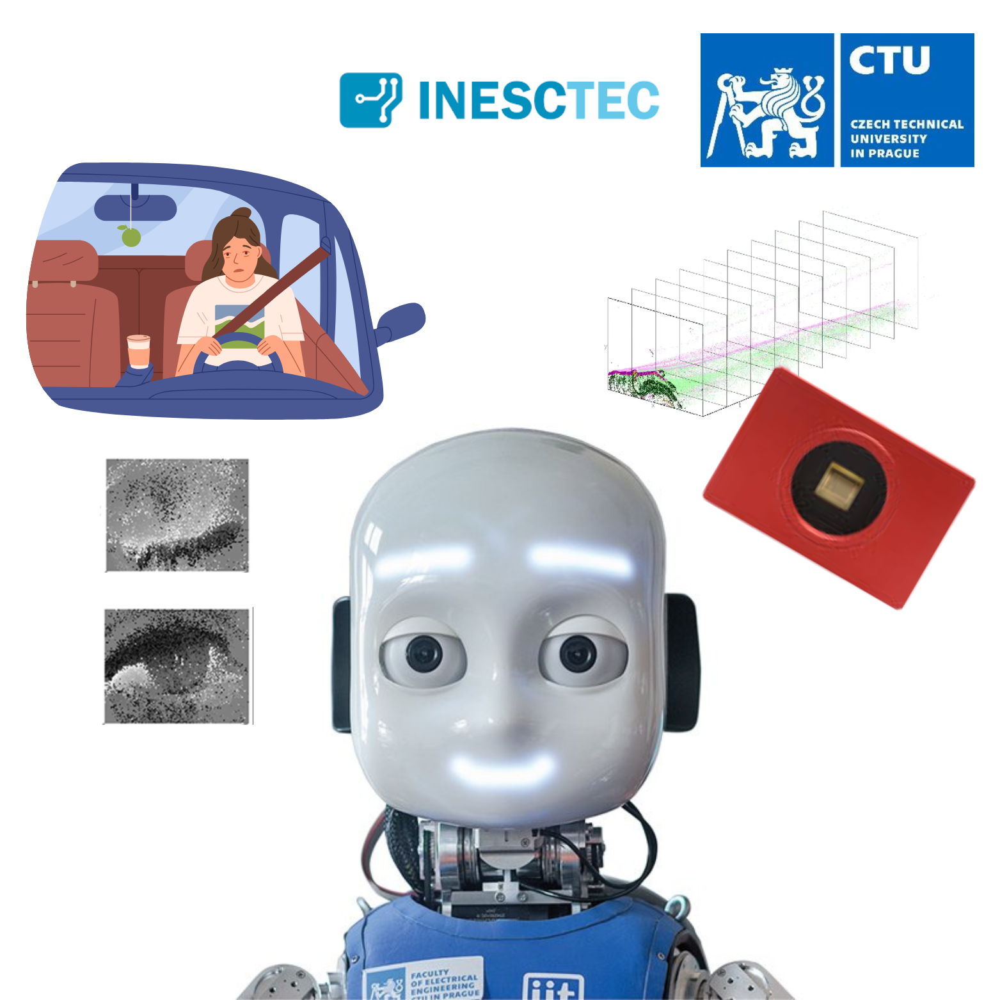
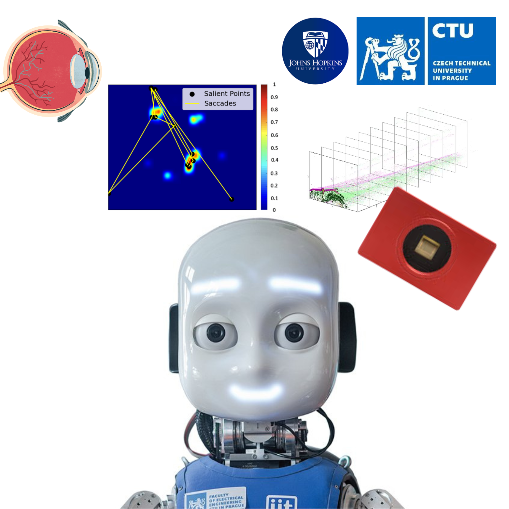

This project explores the use of spiking neural networks (SNNs) for rapid motor control in a dynamic task scenario leveraging event-based cameras. Inspired by the efficiency and adaptability of the human visual system, the project leverages event based vision sensors, a novel class of neuromorphic cameras that mimic the way biological eyes perceive motion and change. Unlike traditional frame based cameras, event based sensors capture asynchronous changes in the visual scene, enabling low latency, high speed, and energy efficient processing. The iCub humanoid robot is programmed to play pinball by detecting the ball’s motion and activating the flippers with its hands to optimize performance. The project combines SNN-based motion detection with an event-driven sensory setup and inverse kinematics for precise flipper control. Development includes implementing and deploying the neural model, integrating the sensory-motor pipeline, and testing the system directly on the robot.
Supervision: Dr. Giulia D'Angelo (CTU), Mazdak Fatahi (University of Lille)
Context: Spiking Neural Network (SNN) for rapid flipper control
Objectives: iCub will play pinball by detecting the ball's movements and pressing the flippers with its hands to win.
Workplan:
1. Master (SNN implementation of the motion detector and deployment on iCub); Bachelor (iCub event-driven setup and inverse kinematics movements to press the flippers)
2. Robots movements to control the flippers
3. Event-based data collection (DVS mounted on iCub) for the pinball
4. Testing on the robot
References:
D'Angelo, Giulia, et al. "Event-based eccentric motion detection exploiting time difference encoding." *Frontiers in neuroscience* 14 (2020): 451.
Fatahi, Mazdak, Pierre Boulet, and Giulia D’angelo. "Event-driven nearshore and shoreline coastline detection on SpiNNaker neuromorphic hardware." Neuromorphic Computing and Engineering 4.3 (2024): 034012.

This project investigates bioinspired object discrimination using spiking neural networks (SNNs) and sensorimotor learning leveraging event-based visual information. Inspired by the efficiency and adaptability of the human visual system, the project leverages event based vision sensors, a novel class of neuromorphic cameras that mimic the way biological eyes perceive motion and change. Unlike traditional frame based cameras, event based sensors capture asynchronous changes in the visual scene, enabling low latency, high speed, and energy efficient processing. It employs the iCub humanoid robot, which visually explores and manipulates objects to learn their features through sensorimotor contingencies theories (SMCT). The work integrates a spiking neural model with continual learning through time (CLTT) and an event-driven sensory setup involving wrist and neck movements. Development includes designing the robot model and evaluating its performance on object similarity tasks.
Supervision: Dr. Giulia D'Angelo (CTU), (PhD Šárka Lísková)
Context: SNN for bioinspired object discrimination
Objectives: iCub will hold an object and visually explore it to learn through sensorimotor contingencies.
Workplan:
1. Master (SNN implementation following SMCT with CLTT); Bachelor (event-driven setup wrist/neck iCub's movements)
2. iCub will hold an object and visually explore it (iCub's neck and wrist movements)
3. Robot model development and deployment on the robot together with the robot movements
4. Testing on different class of objects.
References:
Aubret, Arthur, et al. "Learning object semantic similarity with self-supervision." *IEEE ICDL* (2024).
Kolner, Oleh, et al. "Mind the GAP: Glimpse-based Active Perception improves generalization and sample efficiency of visual reasoning." arXiv preprint arXiv:2409.20213 (2024).

This project focuses on the installation and configuration of the SpiNNaker neuromorphic computing platform, designed to support large-scale, brain-inspired neural networks. The work involves setting up the hardware, running test neurons, and constructing an example spiking neural network. The project is situated within a broader neuromorphic hardware context and draws on foundational work from the SpiNNaker project. Importantly, this project lays the groundwork for future development of more complex spiking neural networks running in real-time on the SpiNNaker platform with low-latency and low-power consumption. By establishing a robust and functional system setup, it enables subsequent research into biologically inspired computation and real-time neural processing on dedicated neuromorphic hardware.
Supervision: Dr. Giulia D'Angelo (CTU)
Context: Neuromorphic hardware setup
Objectives: SpiNNaker installation and setup
Workplan:
1. Install libraries for the neuromorphic hardware
2. Run test neurons
3. Build example network
References:
Furber, Steve B., et al. "The spinnaker project." *Proceedings of the IEEE* 102.5 (2014): 652-665.
https://github.com/spinnakermanchester

This project explores how robots can learn to recognize and reproduce human gestures by integrating event-based vision with proprioceptive sensing. Inspired by the efficiency and adaptability of the human visual system, the project leverages event based vision sensors, a novel class of neuromorphic cameras that mimic the way biological eyes perceive motion and change. Unlike traditional frame based cameras, event based sensors capture asynchronous changes in the visual scene, enabling low latency, high speed, and energy efficient processing. We use the iCub humanoid robot, equipped with an event-driven camera mounted on a custom 3D-printed head support. Gestures are acquired through human demonstration and reproduced by the robot in real time, enabling fast, adaptive interaction in dynamic environments.
Supervision: Dr. Giulia D'Angelo (CTU), Prof. Karla Stepanova (CIIRC)
Context: Event-based gesture learning and reproduction with iCub
Objectives: iCub learns gestures from human demonstrations using event-based DVS data and proprioception
Workplan:
1. Collect demonstration data using vision and proprioception.
2. Use the IBM DVS gesture and collect new dataset for training.
3. Develop gesture recognition using event-based data.
4. iCub reproduces the gestures demonstrated by a person standing in front of it.
References:
G. Sejnova and K. Stepanova, "Feedback-Driven Incremental Imitation Learning Using Sequential VAE," 2022 IEEE International Conference on Development and Learning (ICDL), London, United Kingdom, 2022, pp. 238-243, doi: 10.1109/ICDL53763.2022.9962185.
Giulia D., et al. "Wandering around: A bioinspired approach to visual attention through object motion sensitivity." arXiv preprint arXiv:2502.06747 (2025).

This project investigates how robots can learn to recognize objects through active, multimodal exploration guided by natural language. We use the iCub humanoid robot equipped with an event-driven camera mounted on a custom 3D-printed head support, which explores objects by combining visual exploration with wrist movements while receiving teaching signals through verbal instructions. Inspired by the efficiency and adaptability of the human visual system, the project leverages event based vision sensors, a novel class of neuromorphic cameras that mimic the way biological eyes perceive motion and change. Unlike traditional frame based cameras, event based sensors capture asynchronous changes in the visual scene, enabling low latency, high speed, and energy efficient processing. Objects are presented to the robot, which performs visual and motor-based interactions to gather perceptual data. Language input bridges perception and action, allowing the robot to associate object features with corresponding verbal descriptions. This approach enables interactive and embodied object learning in real-world scenarios.
Supervision: Dr. Giulia D'Angelo (CTU), Prof. Karla Stepanova (CIIRC)
Context: Event-based object discrimination via language cues with iCub
Objectives: iCub learns objects from human verbal insight and active exploration using event-based DVS data and proprioception
Workplan:
1. Setup for iCub to hold and visually explore objects using wrist articulation.
2. Integrate visual and proprioceptive signals during exploration.
3. Provide teaching signals using language (e.g., "This is a cup").
4. iCub reproduces the gestures demonstrated by a person standing in front of it.
5.Develop a multimodal representation linking language, vision, and action.
6. Train object recognition models using the collected data.
7. Test generalization through iCub performing visual search when asked verbally (e.g., “Find the cup”).
References:
Štěpánová K., Frederico B. Klein, Angelo Cangelosi, Vavrečka M. “Mapping
language to vision in a real-world robotic scenario.” IEEE Transactions on
Cognitive and Developmental Systems (2018)
Giulia D., et al. "Wandering around: A bioinspired approach to visual attention through object motion sensitivity." arXiv preprint arXiv:2502.06747 (2025).

This project explores bioinspired approaches to face recognition using event-based vision leveraging neuromorphic cameras that mimic the way biological eyes detect motion and change. Unlike traditional frame-based cameras, these sensors capture asynchronous brightness changes at each pixel, enabling low-latency, high-speed, and energy-efficient processing. Focusing on robust and efficient face recognition under challenging conditions, the project aims to develop a fast, sparse, and resilient recognition system tailored to event-driven input. After reviewing current research on event-based and biologically inspired vision models, a specialized recognition pipeline will be implemented and tested using a newly collected dataset of dynamic facial events. The system’s performance will be benchmarked against conventional approaches in conditions such as low light and motion, highlighting its robustness and efficiency. Finally, the solution will be deployed on a humanoid robot to validate its real-time applicability in interactive settings. This work contributes to advancing neuromorphic vision by aligning artificial perception more closely with the efficiency of natural systems.
Supervision: Dr. Giulia D'Angelo (CTU), Dr. Ana Filipa Sequeira (INESC TEC)
Context: Neuromorphic vision for efficient and robust face recognition under challenging conditions
Objectives:Sparse, robust and fast bioinspired event-based face recognition
Workplan:
1. State of the art and literature review on event-based face recognition and bioinspired models
2. Implement a face recognition pipeline optimized for event-driven input
3. Preprocess and collect a new event-based face dataset
4. Evaluate performance against conventional vision approaches in challenging conditions
5. Deploy and test the system on the iCub robot
References:
Lenz, Gregor, Sio-Hoi Ieng, and Ryad Benosman. "Event-based face detection and tracking using the dynamics of eye blinks." Frontiers in Neuroscience 14 (2020): 587.
Moreira, Gonçalo, et al. "Neuromorphic event-based face identity recognition." 2022 26th International Conference on Pattern Recognition (ICPR). IEEE, 2022.

This project investigates bioinspired approaches to blink detection as a means of enhancing driver monitoring systems and improving road safety. Inspired by the efficiency and adaptability of the human visual system, the project leverages event based vision sensors, a novel class of neuromorphic cameras that mimic the way biological eyes perceive motion and change. Unlike traditional frame based cameras, event based sensors capture asynchronous changes in the visual scene, enabling low latency, high speed, and energy efficient detection of rapid eye movements such as blinks. These characteristics make them particularly well suited for real time driver monitoring in dynamic and resource constrained environments such as automotive settings. The aim of the project is to develop a robust blink detection pipeline that can operate reliably under varying lighting conditions, head poses, and occlusions, with a specific focus on detecting signs of drowsiness or inattention. By integrating insights from neuroscience, computer vision, and machine learning, this work contributes to the advancement of intelligent driver assistance systems and the broader field of human centered vehicle safety technologies.
Supervision: Dr. Giulia D'Angelo (CTU), Dr. Ana Filipa Sequeira (INESC TEC)
Context: Neuromorphic vision for efficient and robust blink detection under challenging conditions
Objectives:Sparse, robust and fast bioinspired event-based blink detection
Workplan:
1. State of the art and literature review on event-based blink detection and bioinspired models
2. Implement the blink detector optimized for event-driven input
3. Preprocess and collect a new event-based blink detection dataset
4. Evaluate performance against conventional vision approaches in challenging conditions
5. Deploy and test the system on the iCub robot
References:
Lenz, Gregor, Sio-Hoi Ieng, and Ryad Benosman. "Event-based face detection and tracking using the dynamics of eye blinks." Frontiers in Neuroscience 14 (2020): 587.
Ryan, Cian, et al. "Real-time face & eye tracking and blink detection using event cameras." Neural Networks 141 (2021): 87-97.

This project continue the recently published work from Giulia D., et al. "Wandering around: A bioinspired approach to visual attention through object motion sensitivity". Inspired by the efficiency and adaptability of the human visual system, the project leverages event based vision sensors, a novel class of neuromorphic cameras that mimic the way biological eyes perceive motion and change. Unlike traditional frame based cameras, event based sensors capture asynchronous changes in the visual scene, enabling low latency, high speed, and energy efficient processing. The aim of the project is to understand and devlep a robust architecture to mimic fixational eyes movements and saccades, which are essential for visual attention and perception. By integrating insights from neuroscience, computer vision, and machine learning, this work contributes to the advancement of intelligent bioinspired robotics and the understanding of human visual processing.
Supervision: Dr. Giulia D'Angelo (CTU), Prof. Ernst Niebur (JHU)
Context: Bioinspired human-like eyes movements with neuromorphic active vision
Objectives:Bioinspired fixational and saccades eyes movements with neuromorphci active vision
Workplan:
1. State of the art and literature review on fixational eyes movements models
2. Implement of the microsaccades on the pan-tilt unit (finding the best random walk movements)
3. Preprocess and collect a new event-based dataset for human-like eyes movements
4. Evaluate performance in terms of object motion sensitivity and visual attention
5. Deploy and test the system on the iCub robot (iCub's neck movements)
References:
Giulia D., et al. "Wandering around: A bioinspired approach to visual attention through object motion sensitivity." arXiv preprint arXiv:2502.06747 (2025).
D’Angelo, Giulia, et al. "Event driven bio-inspired attentive system for the iCub humanoid robot on SpiNNaker." Neuromorphic Computing and Engineering 2.2 (2022): 024008.